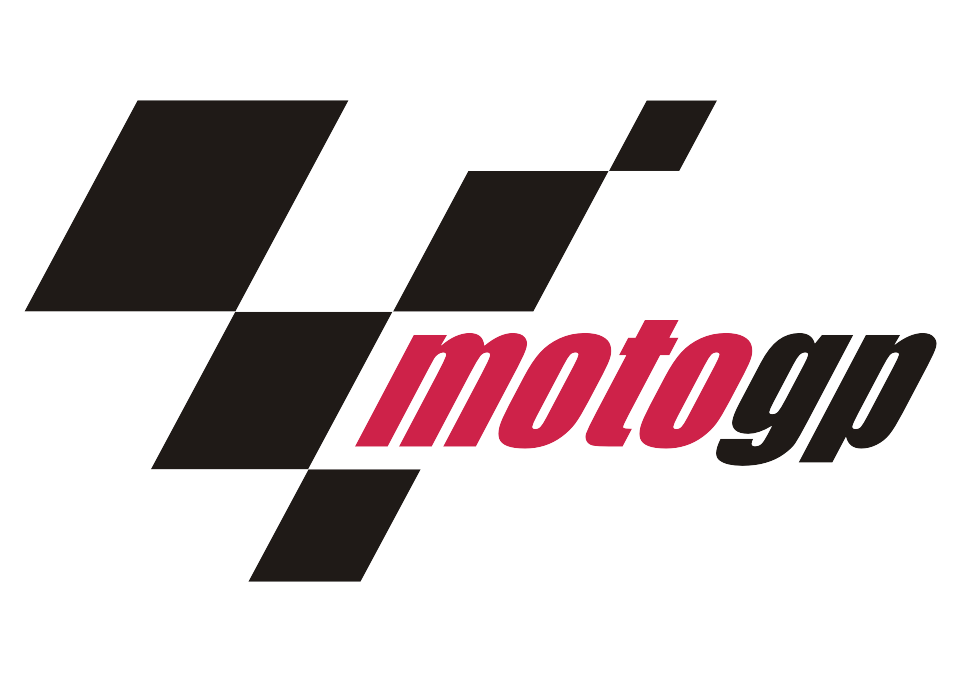
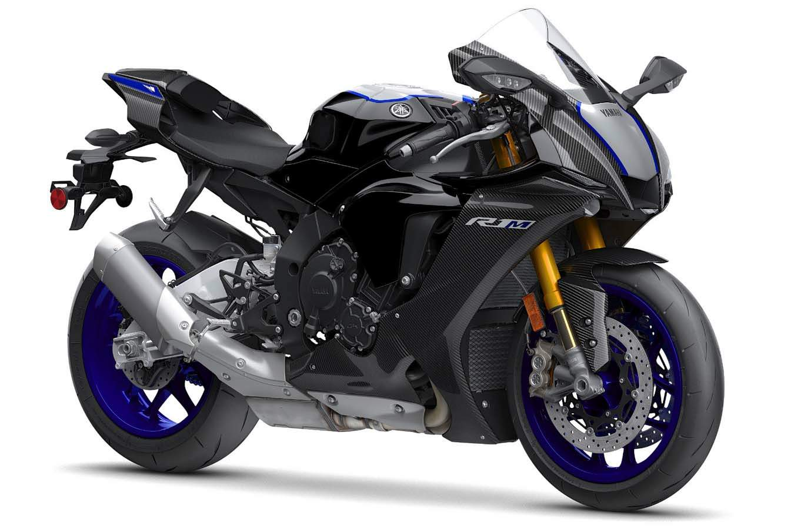
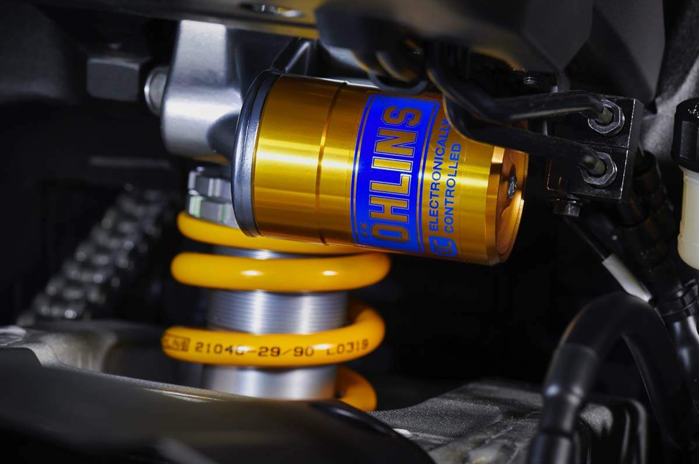
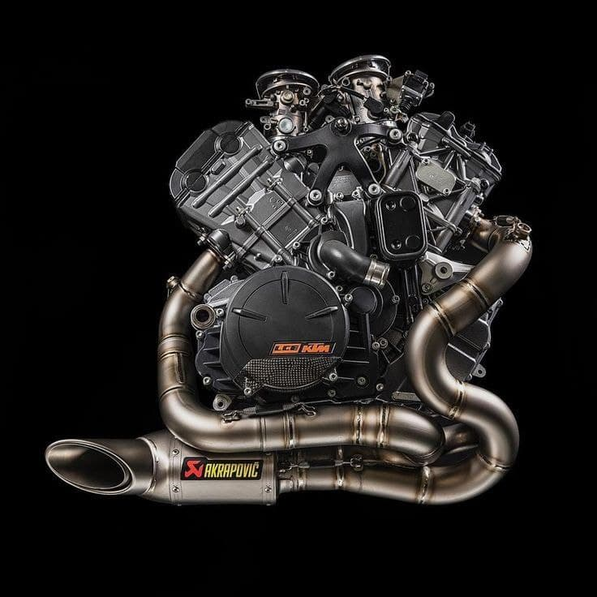
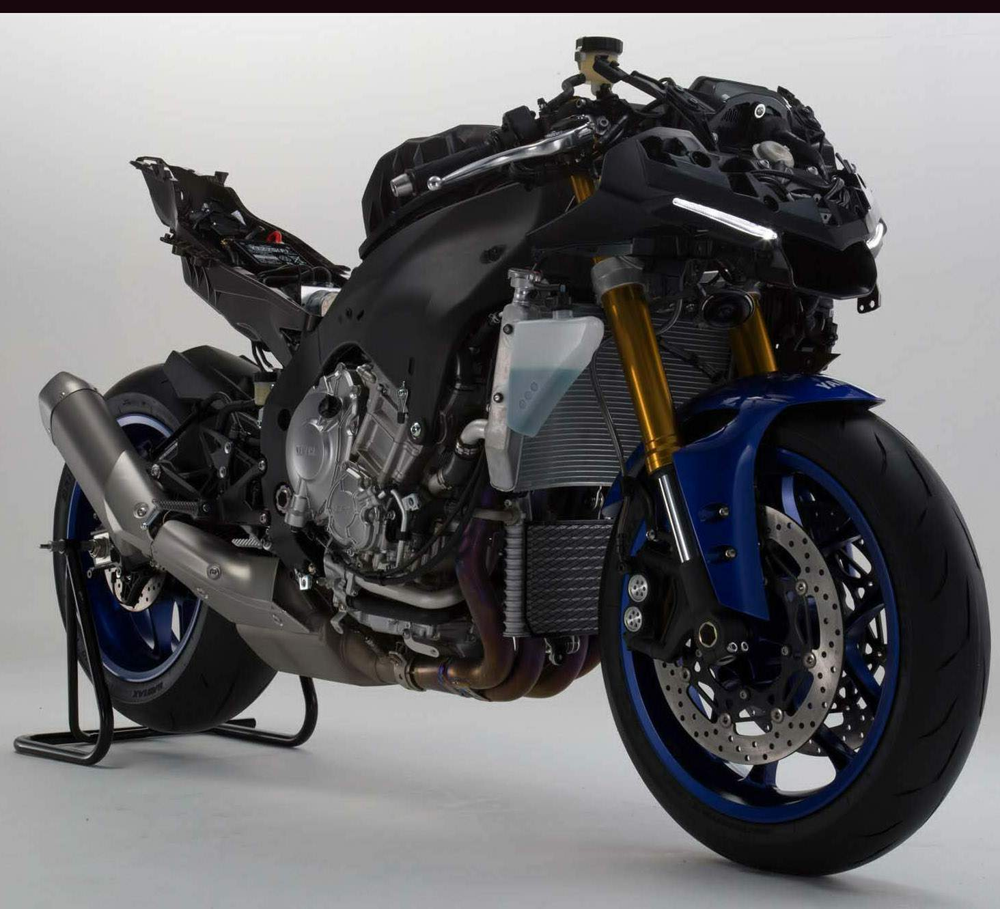

Yamaha YZF-R1
Yamaha YZF-R1
Це японський спортивний мотоцикл виробництва Yamaha Motor Company
Модель спортивного мотоцикла Yamaha R1 (YZF-R1) вперше з'явилася в
1998 році на базі Yamaha YZF1000R і доопрацьованого двигуна Genesis, який став ще більш
компактним.
Завдяки доопрацюванням конструкції двигуна, вдалося скоротити колісну базу мотоцикла, а також оптимізувати його центр ваги, що значно підвищило керованість і зробило модель конкурентоспроможної в битві з Honda CBR900 Fireblade. На той момент модель Yamaha YZF-R1 видавала 150 к.с. потужності і 108 Нм крутного моменту при сухій масі в 177 кг.


Yamaha YZF 1000 R1-M
2015 г. - черговий рестайлінг Yamaha R1. Заводське позначення
- RN32 . Крім оновленого зовнішнього вигляду, мотоцикл отримує доопрацьований
двигун, який видає 200 к. титанові шатуни, титанову вихлопну систему і цілий
набір електронних систем: трекш-контроль, лаунч-контроль, систему контролю
пробуксовки заднього колеса, систему контролю ходу колеса, АБС і систему IMU

Технології
Нова Yamaha YZF-R1M має електронні підвіски, чудові
комбіновані гальма з ABS, самостійно розподіляють зусилля по осях, багаторівневий
трекшн-контроль, зав'язаний на гіроскоп, що відслідковує кут нахилу мотоцикла. А
головне - можливість налаштовувати безліч параметрів, як через меню приладової
панелі, так і через бездротові мережі в режимі онлайн.
.

Двигун
Архітектура шасі і двигуна «Ямахи» традиційно включає в себе
4-циліндровий поперечний рядник, алюмінієву раму і маятник, а також повністю
регульовану вилку перевернутого типу. Ну а глобальний стрибок вперед був
досягнутий в першу чергу завдяки електроніці - її тут більше, ніж в деяких
літаках.

Комплектація
Mотоцикл оснащений двигуном великої потужності 197лс.
Незважаючи на те, що хороші моделі мотоциклів відрізняються досить солідною
ціною, а сезон їх використання відносно короткий, ринок мототехніки стрімко
розвивається. А якщо вірити словами дилерів, то деякі моделі недавно випущених
мотоциклів на початку сезону розходяться як гарячі пиріжки.